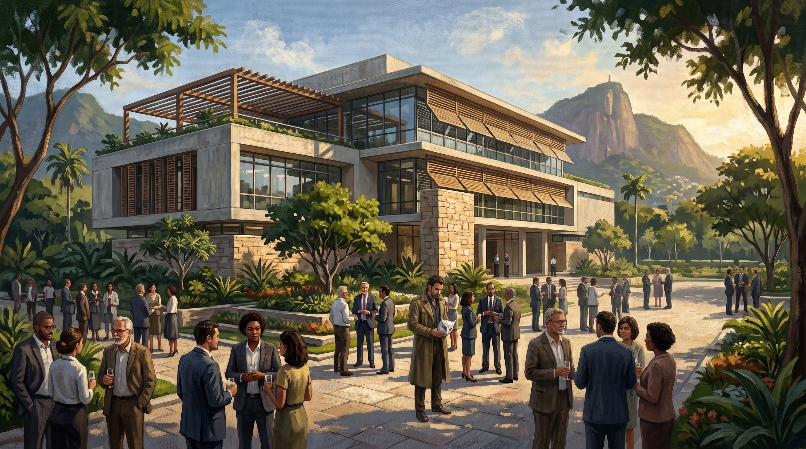

A Fundação LUME para Ciência e Cultura inaugurou, em setembro de 2011, um centro de estudos e biblioteca no Rio de Janeiro. O espaço foi apresentado como uma iniciativa voltada à preservação de acervos, divulgação científica e aproximação entre pesquisadores e instituições culturais.
O edifício restaurado recebeu uma biblioteca especializada, salas de consulta e um pequeno núcleo para pesquisadores convidados. O acervo inicial reunia publicações de história natural, medicina, filosofia da ciência, psicologia experimental e estudos sobre comportamento humano.
Registro fotográfico

A fotografia foi incorporada ao arquivo institucional junto ao comunicado de inauguração. A identificação pública registra representantes da Fundação, pesquisadores convidados e membros de instituições parceiras presentes na cerimônia.
O registro administrativo
- Instituição: Fundação LUME para Ciência e Cultura
- Unidade: Centro de Estudos LUME — Rio
- Local: Rio de Janeiro, RJ
- Finalidade declarada: pesquisa, preservação de acervo e divulgação científica
- Arquivo fotográfico: FLC-RJ-2011-09
- Responsável pela inauguração: Fundação LUME para Ciência e Cultura
A documentação pública descreve o espaço como centro cultural e científico. O arquivo de 2011 não apresenta uma lista completa dos convidados da cerimônia.